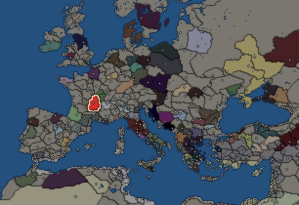
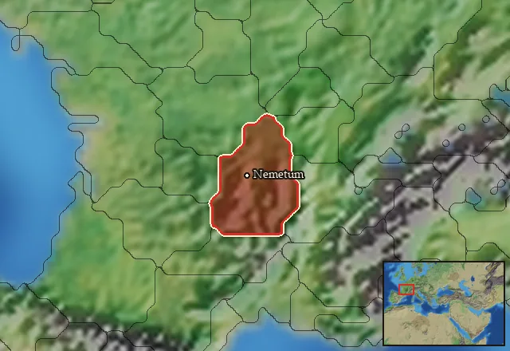

RTR: Imperium Surrectum
RTR: Imperium SurrectumArverni


- difficulty Medium
- Gallic culture
- believes
 Celtic
Celtic - 1 settlement
- capital Nemetum
- 8,300 manpower
- 3 characters
- 20 faction units
- 429 regional units
The campaign brief
"All Gaul is divided into three parts, one of which the Belgae inhabit, the Aquitani another, those who in their own language are called Celts, in ours Gauls, the third. All these differ from each other in language, customs and laws." – Caesar
At the campfires, the tribal elders often tell stories of the migration of the Celtic peoples as we spread across the known world and claimed our place in it. Our oldest ancestors lived a simple and free life on the rivers Rhine and Danube. From there, however, large groups of men, women and children left to seek new land to colonise, as their old homeland did not offer the growing population enough supplies to flourish. Some of these great hikes ended in the peaceful settlement of their new home, but in other cases the newcomers first had to conquer these areas with the sword. Strength and combat and superior iron weapons secured fertile land and thus the future of the new tribes. We only know of these deeds from the early periods through stories, because we do not know the scriptures - only a select circle of Druids commands the knowledge of Greek letters. The common language alone is the only unifying bond of the various Gallic tribes.
Some tribes, such as the Boii, were beset by our old enemies, the Germanic tribes. They divided into groups, some of which remained in the old area, while others went out to conquer new lands. Thus, the Boii moved to northern Italy and founded the mighty Bononia there. They mingled with the local peoples and campaigned against the Etruscans and Romans. Many Boii followed the Senones under Brennus against Rome, and they remain a latent threat to the up-and-coming city on the Tiber. Even today, the Romans fearfully look to their northern borders in constant fear of new hordes of Celtic warriors invading their lands.
In the North, our ancestors settled in remote Britannia and founded numerous powerful kingdoms. With many seaworthy ships, they first crossed the stormy sea and were soon able to take possession of the best settlements. They are constantly in competition with each other, and war is omnipresent. The bloody rituals of their druids make them seem wild and cruel to other peoples. Britannia is the stronghold of the Celtic world and the warriors there are fearless seafarers and skilled charioteers. Only on holy Ierne are the people more savage.
In the middle of the continent, the Arverni and Belgae have their kingdoms and form the core of Celtica. They live together in small settlements or scattered farmsteads and sustain themselves through agriculture and livestock. The Arverni and Aedui benefit from their proximity to the peoples of the Mediterranean, by making fruitful trade with them and participating in the scientific, military and political advances of their civilisations, especially the Greeks of Massalia. The Arverni are one of the leading Celtic tribes of Gaul, while the Belgae hold great power in the north, favoured by the location on the Rhine, which is regularly used by ships from the south. Their military power is based essentially on the processing of good iron to weapons and the intrepidity of their warriors. In the southwest, the Aquitani dwell along the river basins of the mighty oceans, flourishing on the bountiful flatlands.
The peoples of the South should always be afraid of us, as we Celts are not only powerful in the ancient stories of our tribal elders, but we still have capable leaders, innumerable warriors and the best weapons. The ferocity and power of our warriors are the terror of the peoples beyond our lands. From the heart of Gaul, we will pour out into the world and take what the Gods have promised us!
Starting settlements
Arverni begins with 1 settlement and 8,300 manpower.
What is already built in each settlement
Nemetum, in Arvernia: Governor's Palace, Small Stone Wall, Homeland, Region Information Scroll, Paved Roads, Local Market, Highland Pasturing (Husbandry), Mines (Industry), Barracks and Armoury, Sewers (Sanitation)
Starting diplomacy
Arverni begins the campaign with no allies, no trade agreements and no wars.
Like every faction, it is also at war with the  Free Peoples, who hold every settlement no faction does.
Free Peoples, who hold every settlement no faction does.
Homeland
Arverni's homeland is 1 region. Only there can it install the Homeland government (more on homelands).

Starting characters
| Name | Role | Age | Name | Role | Age | Name | Role | Age | |||
|---|---|---|---|---|---|---|---|---|---|---|---|
| Luernius | General | 36 | Bituitus | General | 35 | Congonnetiacus | General | 18 |
Reforms
Open to every faction: Military innovations have arrived!, Second wave of military innovations have arrived!.
Units you can recruit
The same as in the main campaign.